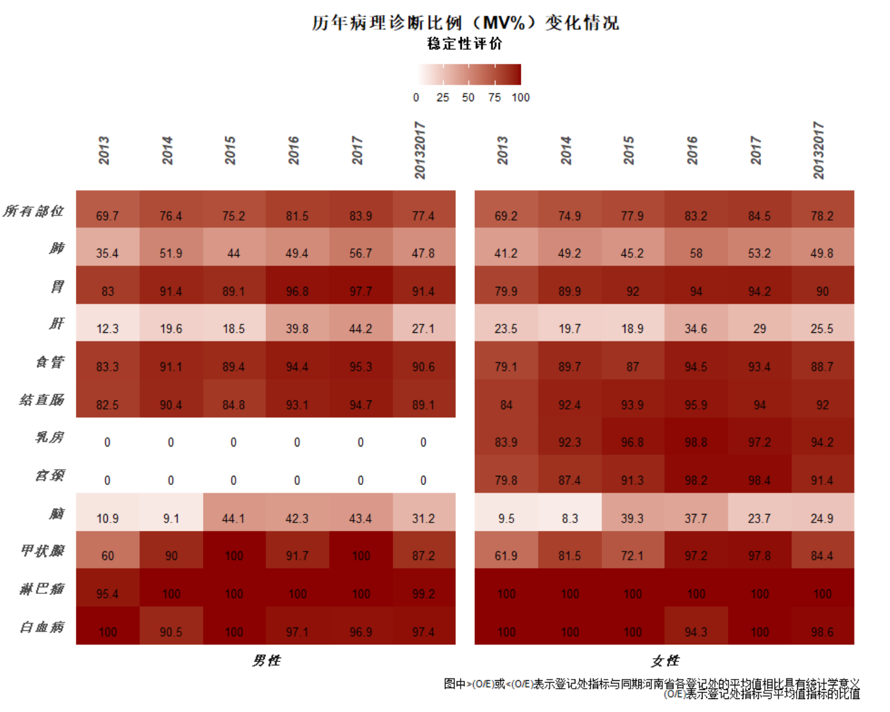
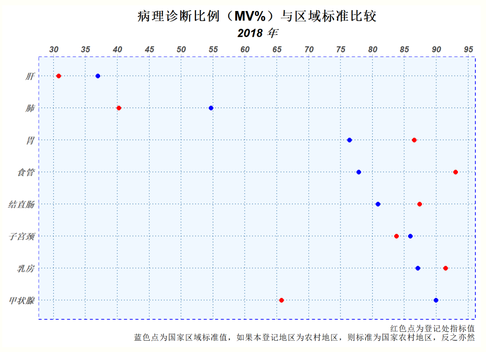

肿瘤登记数据的质量控制对于产出高质量数据至关重要，以人群为基础的肿瘤登记数据一般从四个方面进行质量控制，具体包括可比性、完整性、有效性和时效性指标，而病理诊断比例(MV%)指标可以在完整性和有效性两个方面对肿瘤登记数据的质量进行评价。
病理诊断比例(MV%)是指收集的全部病例中，经过形态学诊断（组织下、细胞学、血液学）确认的病例数占全部病例数的百分比，\(\frac{经病理学确认的病例数}{所有病例数}\)，该指标的大小受到肿瘤的发病部位、肿瘤登记地区的病理诊断能力与水平、该地区的医疗服务能力与水平等因素的影响，因此，我们在利用该指标进行肿瘤登记数据质量评价时应该考虑这些因素。
在质量评价方面，MV%的绝对指标意义有限，通常利用它与适当的标准比较,比如与相似的区域的MV%指标比较，或者与国家的平均水平进行比较，从而判断该肿瘤登记地区的数据的有效性和完整性。
与一定的区域标准MV值%进行比较
当肿瘤登记处的MV%值与区域标准（比如国家的平均水平）进行比较的时候，如果登记处MV%值与区域标准差距较大，并且该地区的医疗服务能力与水平以及病理诊断能力与区域平均水平没有很大差异的时候，则提示该登记处数据的有效性或者完整性可能存在问题。如果登记处MV%值小于区域标准值，并且差距较大，提示登记处收集的数据有效性较差；而如果登记处MV%值大于区域标准值，并且差距较大，则提示登记处数据的完整性可能存在问题。

与一定的区域标准MV值%进行比较
在多年的连续监测中，一个登记处的MV%应该是相对稳定的，不会出现大的波动，因为一个地区的医疗服务水平或者病理诊断能力是相对稳定的。如果多年份的MV%值出现跳跃性波动，则提示登记处数据的稳定性较差，相应存在波动年份的数据可能存在问题。